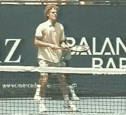
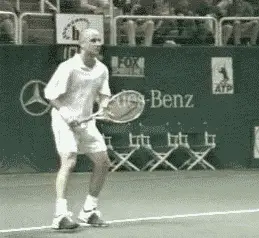
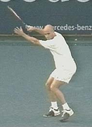
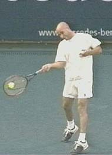
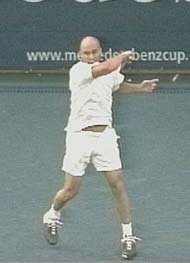
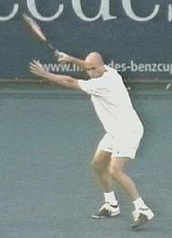
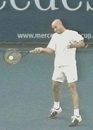
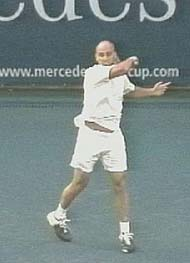
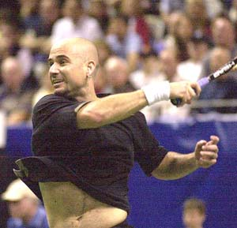
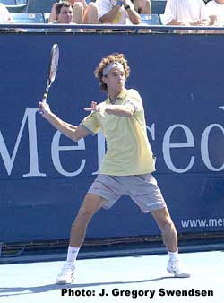

Comparing the Open and Closed Stances¶
John Yandell¶
In tennis what is opinion and what is really fact? The quantitative study of the tennis is in its infancy, but it has the potential to change how we understand the game. What can be measured in tennis and what does it really mean? Are your most cherished beliefs about how to hit the ball actually true?

The open stance forehand dominates the modern pro game, but what are it's real advantages, if any?
A number of pioneering researchers have done quantitative studies of the strokes, as well as other areas of the game. But their results remain largely unknown in the teaching and playing communities.
In this article, we'll start to take a look at some of the existing quantitative research, try to summarize it in language any player can understand, and see what questions are raised, what questions are answered, and what remains unclear and grounds for future investigation.
The first work we'll look at is a study of the differences in the open stance and closed stance forehand, completed by Duane Knudson, professor of physical education and exercise science at California State University, Chico.
The open stance forehand is dominant in the modern pro game. It's commonly believed that the open stance produces more racquet head speed, more topspin, and more torso rotation. But what are the real differences between the open stance and the closed stance? What advantages does the open stance have, if any, for lower level players?
Although he did not include professional players, Knudsen addressed these issues through a quantitative study using teaching pros and recreational players. The results were surprising. His data showed that, at least for players below the world class level, there were no measurable advantages for the open stance. If anything, the data suggested slight advantages for the closed stance.
Knudson's study found racquet head speed, for both stances, essentially the same. The speed of the torso rotation was also the same. The angle of the swing plane for both stances was the same. The open stance did not produce a more radical low to high motion, which would be associated with greater topspin.
Here are the details of what he tried to do, how he did it, and what he found, as well as the questions the study didn't try to address, and some speculations about how the conclusions apply to the pro game.

Andre Agassi is one of the few top players to use both stances. What are the differences when he hits with an open or closed stance?
Background
Knudsen's study sought to shed new light on a significant disagreement in the coaching community over the relative merits of the forehand stances. Some coaches believe the square stance creates a flatter racquet path which would tend to increase the velocity and possibly the accuracy of the stroke. Others coaches argue open stance forehands generate more racquet head speed due to increased torso and arm rotation-the so-called whip factor.
Knudsen's study collected data to test these coaching hypotheses about the stroking advantages of the stances.
The question was, would quantitative measurements reveal significant differences in the movement patterns of the swings?
To find out, he used multiple camera filming and software analysis to actually measure racquet head speed, the path of the racquet at impact, and the velocity of the trunk at impact. Do open stance forehands have more or less racquet velocity? Do they require greater trunk angular velocity? Do they have a steeper racquet path before impact?
The study also examined how well players at different skill levels were able to execute with both stances. Most biomechanical research on the tennis forehand has focused on highly skilled players. Knudson believed it was important to study typical recreational players who were also using the open style forehand drive.
Subjects
The subjects were from two groups. The first was right-handed teaching professionals. The second was right-handed intermediate tennis players, with an NTRP rating between 3.5 and 4.5. The study included both men and women, and the age range was from 21 to 62.
All subjects used the same midsized racquet strung with nylon, at 60 lbs. Subjects were allowed to warm-up with an identical racquet to get accustomed to the racquet and stroking conditions. New tennis balls were projected from a ball machine at about 45mph.
Racquet and upper extremity markers were used to identify body/joint landmarks. Reflective circular bands were used at the wrist and elbow of the stroking arm. The racquet was also marked at five points defining the head position and orientation of the racquet.
For data collection, the subjects hit 3 open stance forehands from behind the baseline, then 3 square stance forehands from the same position. Forehands were stroked down the center of the court toward a target in the backcourt. For each subject, Knudson selected one trial, the one with the maximum ball velocity for further analysis.
Data from 21 body landmarks, the five racquet points, and the ball were digitized from the beginning of the forward stroke up to a frame immediately before impact.
Results
As we might expect, the results showed the teaching pros had greater racquet head velocity than the intermediates. The mean racquet head velocity for the pros was about 49mph. For the intermediates, it was about 36mph.
The interesting point, however, was that there was no statistically significant difference in racquet head speed between the stances. That is, racquet head velocity for the teaching pros was essentially the same whether they hit with an open or closed stance. This was also true for the intermediate players. Their racquet head speed was the same for both stances.



Comparing the two stances on Agassi's forehand. The position of the shoulders is virtually identical at the turn, the contact, and the finish.


If anything, there was a possible trend toward more racquet head speed in the closed stance.
Due to the error factor in the measurements, it was impossible to state whether this trend was statistically significant from the scientific point of view. Nonetheless, the tendency was interesting and suggestive.
For the professional players, the actual racquet head velocity for the open stance was about 47mph. For the closed stance it was about 50mph. The intermediate players data showed the same trend: racquet head speed of about 35mph for the open stance, and about 37mph for the closed stance.
These are relatively small differences, about 5%. They were less than the error factor in the measurements but, it was interesting that in both cases the racquet head was slightly faster with the closed stance. Certainly the study did nothing to support the theory that the open stance inherently generates more racquet head speed.
On the question of the angle of the racquet path, the data showed that once again the stances were similar. Again, this contradicted the common perception that open stance forehands have a steeper racquet path, while closed stance forehands have a more elongated, flatter path. For both groups and both stances, the racquet was moving upwards at an angle of about 18 degrees.
Similarly, the angular trunk velocities showed no statistically certain differences for either group comparing the two stances. The trunk velocities for the teaching pros was the same for both stances. The same was true of the intermediates. The only difference was that, as we might expect, the professional group in general had a higher trunk velocity compared to the intermediates.

What is the relationship between grip structure, stance and body rotation?
Once again, however, there was a trend in the data showing higher trunk velocities for the closed stance forehands. This could be due to a slightly different coordination between the strokes just prior to impact. Trunk angular velocity in the open stance forehand peaked sooner compared the square stance forehand. Again the difference was not statistically significant from a scientific point of view. But there certainly was no measurable advantage for the open stance-if anything, the data once again suggested the opposite.
Conclusions
[For the variables examined, Knudson concluded that similarities between open and closed stance forehand techniques may be greater than the potential differences hypothesized by instructional experts.] There were consistent, but non-significant trends of greater trunk angular velocity and racquet resultant velocity at impact at the classic square stance technique compared to the open stance. This provided some, tentative, support to the view that the square stance forehand technique may have biomechanical advantages over the open stance technique in the tennis forehand.
The data did not support the notion of instructional experts that the open stance utilizes greater trunk rotation than the close stance technique. Interestingly, the lack of significant differences in racquet path and trunk angular velocity suggested that the recreational players were able to perform the open stance technique as easily as the more highly skilled players.
Unanswered Questions
One of the major questions left unanswered by this study is, of course, whether the same conclusions would apply in pro tennis as well. Do the pros show the same similarities in terms of rotation and swing plane using the two stances? What about high level junior players? Answering these questions definitively would require additional quantitative filming protocols.
Also unaddressed was the issue of grips in the whole debate. Knudsen didn't specify the grip styles of his subjects. Is it possible that differences often attributed to differences in stances could actually be characteristic of the grip styles?

How do the extreme grips affect the timing and speed of the racquet head and the torso rotation?
In pro tennis, the players with the more extreme grips appear to have much more extreme rotation. They are also the players who tend to hit the most open stance forehands. Possibly, the issues of rotation, swing plane, etc, relate as much or more to grip style than it does to stance.
But for a given player, with a given grip style, are there any real differences in the stances? For example, are there any significant differences for a player like Agassi who hits his forehand both open and closed?
A strictly qualitative look at the high speed footage we have developed at Advanced Tennis suggests some answers. Agassi, for example, appears to have virtually identical rotational patterns on his closed stance and open stance forehands. With his mild semi-western grip, he also has much less total rotation than a player such as Gustavo Kuerten, who has an extreme semi-western.
Agassi starts both his open and closed stance forehands with his shoulders roughly parallel to the baseline in the ready position. At the completion of his turn, he has rotated 90 degrees or a little more, so his front shoulder is perpendicular or slightly past perpendicular to the net. This is the same for either stance.
His body rotation from the turn to the contact point is virtually the same on both stances as well. His shoulders at contact are still partially closed to the baseline, at an angle to the baseline of around 30 degrees. As the still sequence above shows, this appears virtually identical in the two stances.
The rotation from the contact to the completion of the followthrough is also the same. After contact his shoulders continue to rotate, until they are once again parallel to the baseline, and then continue on past parallel for up to another 30 degrees.
Now compare this to Kuerten who is substantially further underneath the handle with his forehand grip. Kuerten's turn move appears to be roughly the same as Agassi's. At the completion of the turn, Kuerten's shoulders are also slightly past perpendicular to the net. The big difference is in the amount of rotation after the turn, from the turn to the contact, and then from the contact to the finish.
Whereas Agassi is still somewhat closed at the contact, Kuerten is wide open with his shoulders parallel to the baseline. The rotation also continues much further than Agassi at the finish. Typically Kuerten finishes with his shoulders actually coming around past parallel until they are close to perpendicular to the baseline, that is, his right shoulder finishes pointing at his opponent.
Although the shoulder position at the turn is similar, note the difference at the contact and the finish between Agassi and Kuerten.
Roughly speaking, Agassi turns about 100 degrees, then rotates about 130 degrees from the turn to the finish. Kuerten's turn is about the same, roughly 100 degrees, but his rotation from the turn to the finish is much greater-about 190 degrees, or almost 50% more than Agassi's.
The big unanswered question of course is what this all really means. It's generally agreed that on hard courts Agassi has the most penetrating forehand in the game, with the possible exception of Pete, who has even less overall rotation than Agassi. Kuerten has more, but is that better? What are the differences here in terms of the effect of the different grips/rotations on the quality of the ball?
Only detailed quantitative analysis can even begin to answer these complex interrelated questions.
For example: When players rotate more or less, how fast is the body actually rotating? When the body rotates more, does it rotate faster, and if so, when in the motion? Does more rotation actually equal more racquethead speed? If there is more racquethead speed does that mean more ball speed?
What is the relation between the racquethead speed and the racquet head direction at contact? Is it possible to swing faster and generate less ball speed? Could one player's racquet be going faster, but in the "wrong" direction, resulting in less ball speed? When does the racquethead speed peak? When is the ideal time for the racquethead to peak in terms of ball speed? Could a player have more racquethead speed but have it peak at the wrong time?
What are the relationships between racquethead speed, ball speed, and spin? If the racquetheads are traveling at the same speed, and the ball speeds are different, is the extra energy always translated into spin? If so what are the relative effects on the quality of the ball?
How does the angle of the swing plane relate to all of these factors? Is it possible to establish anything about the "efficiency" of the various styles?
If we create vectors that compare ball direction and ball speed at contact to racquet direction and racquethead speed, what would we learn? What are the trade offs between swing style, ball speed, and spin in terms of what makes a shot "heavy" or what makes it penetrate the court?
What role does the shot trajectory play? When the ball is hit in a steeper arc with more net clearance how does that affect the ball speed when it reaches the opponent? How does it affect the time interval? Is it possible to hit the ball harder, but have it reach the opponent later, depending on all these factors?
Do we find that any or all of these variables remain the same as the players move from hard courts to clay or grass? Or do the same players have significant bio-mechanical differences from surface to surface? Can we correlate the differences in the bio-mechanical styles to the effectiveness of certain players on certain surfaces?
These questions only show how little we really know about how tennis players at the pro level (or any level) hit the ball. Sometimes it feels discouraging just to pose all these unanswered questions. The only way to begin to answer them, however, is through a long term filming and analysis project that includes the players at the highest level of the game. Still, the work of pioneers like Duane Knudson is a start. We just have a long way to go if we are really going to develop quantitative information that will ultimately provide better coaching information about how to train young players.

John Yandell is widely acknowledged as one of the leading videographers and students of the modern game of professional tennis. His high speed filming for Advanced Tennis and TPA have provided new visual resources that have changed the way the game is studied and understood by both players and coaches. He has done personal video analysis for hundreds of high level competitive players, including Justine Henin-Hardenne, Taylor Dent and John McEnroe, among others.
In addition to his role as Editor of TPA he is the author of the critically acclaimed book Visual Tennis. The John Yandell Tennis School is located in San Francisco, California.
← Cocking, Loading and the Back Foot | Biomechanics Index | 3D Serve - Upward Swing Part 1 →